Automated Version Control with Git and GitHub for Data Science
Best Practices for Research
DAVT-NDMC, EPHI
26-30 March, 2026
Automated Version Control
Questions
- What is version control and why should I use it?
What is version control?
- A version control system (VCS) tracks changes to files over time, so you can recover earlier versions of a file or the whole project.
- It also lets multiple people work on the same project at the same time without overwriting each other’s work.
- VCS is often used interchangeably with software configuration management (SCM), though version control is only one part of SCM.
- With version control, you can see who changed what and when, add commit messages, create branches for experimental work, merge changes back into the main branch, and tag releases.
- Git is a fast, scalable, free, open-source distributed VCS, created by Linus Torvalds in 2005.
Distributed version control
- Older VCS tools like CVS, Subversion (SVN), and Perforce used a central server, which could become a single point of failure.
- Git is distributed, so the full project history lives on both the client and the server; you can work offline and sync later.
- If the server fails, your local copy still contains the project history.
Git terminology
- Working tree: the project files you are currently editing.
- Repository (repo): the directory that stores Git history and metadata; a bare repo has no working tree and is often used for sharing or backup. [web:11]
- Hash: a fixed-length value Git uses to detect content changes. [web:11]
- Object: Git data stored as blobs, trees, commits, and tags. [web:11]
- Commit: a saved snapshot of changes. [web:11]
- Branch: a named line of commits; the current branch is
HEAD, and the default branch is usuallymainormaster. [web:11] - Remote: a named reference to another repository, often
origin. - Commands and options: Git uses commands like
git pushandgit pull, with options such as--hard.
The Problem with Manual Version Control
- We’ll start by exploring how version control can be used to keep track of what one person did and when. Even if you aren’t collaborating with other people, automated version control is much better than this situation:

Not Final Comic
We’ve all been in this situation before: it seems unnecessary to have multiple nearly-identical versions of the same document. Some word processors let us deal with this a little better, such as Microsoft Word’s Track Changes, Google Docs’ version history, or LibreOffice’s Recording and Displaying Changes.
How Version Control Works
- Version control systems start with a base version of the document and then record changes you make each step of the way. You can think of it as a recording of your progress: you can rewind to start at the base document and play back each change you made, eventually arriving at your more recent version.

Play Changes
- Once you think of changes as separate from the document itself, you can then think about “playing back” different sets of changes on the base document, ultimately resulting in different versions of that document. For example, two users can make independent sets of changes on the same document.
Multiple Versions
 A diagram that shows the merging of two different document versions into one document that contains all of the changes from both versions
A diagram that shows the merging of two different document versions into one document that contains all of the changes from both versions
 A diagram that shows the merging of two different document versions into one document that contains all of the changes from both versions
A diagram that shows the merging of two different document versions into one document that contains all of the changes from both versions
What is a Version Control System?
A version control system is a tool that keeps track of these changes for us, effectively creating different versions of our files. It allows us to decide which changes will be made to the next version (each record of these changes is called a commit), and keeps useful metadata about them, such as who made the change.
The complete history of commits for a particular project and their metadata make up a repository. Repositories can be kept in sync across different computers, facilitating collaboration among different people.
The Long History of Version Control Systems
- Early version control (1980s): RCS, CVS, Subversion—now legacy due to limitations.
- Modern distributed systems: Git, Mercurial—no central server, strong merging for concurrent edits.
- Git’s origin: Created by Linus Torvalds (2005) to replace BitKeeper for Linux kernel; name ideas in README (e.g., “Global Information Tracker”).
Challenge: Paper Writing
Consider these scenarios:
Imagine you drafted an excellent paragraph for a paper you are writing, but later ruin it. How would you retrieve the excellent version of your conclusion? Is it even possible?
Imagine you have 5 co-authors. How would you manage the changes and comments they make to your paper? If you use LibreOffice Writer or Microsoft Word, what happens if you accept changes made using the
Track Changesoption? Do you have a history of those changes?
View Solution
Recovering the excellent version is only possible if you created a copy of the old version of the paper. The danger of losing good versions often leads to the problematic workflow illustrated in the PhD Comics cartoon at the top of this page.
Collaborative writing with traditional word processors is cumbersome. Either every collaborator has to work on a document sequentially (slowing down the process of writing), or you have to send out a version to all collaborators and manually merge their comments into your document. The ‘track changes’ or ‘record changes’ option can highlight changes for you and simplifies merging, but as soon as you accept changes you will lose their history. You will then no longer know who suggested that change, why it was suggested, or when it was merged into the rest of the document. Even online word processors like Google Docs or Microsoft Office Online do not fully resolve these problems.
Setting Up Git
Questions
- How do I get set up to use Git?
First-Time Git Configuration
When we use Git on a new computer for the first time, we need to configure a few things:
- our name and email address,
- what our preferred text editor is,
- and that we want to use these settings globally (i.e. for every project).
On a command line, Git commands are written as
git verb options, whereverbis what we actually want to do andoptionsis additional optional information which may be needed for theverb.
Setting Your Identity
Here is how Anwar sets up his new laptop:
Please use your own name and email address instead of Anwar’s. This user name and email will be associated with your subsequent Git activity, which means that any changes pushed to GitHub, BiMalariaucket, GitLab or another Git host server after this lesson will include this information.
For this lesson, we will be interacting with GitHub and so the email address used should be the same as the one used when setting up your GitHub account.
Keeping your email private
- If you elect to use a private email address with GitHub, then use GitHub’s no-reply email address for the
user.emailvalue. It looks likeID+username@users.noreply.github.com. You can look up your own address in your GitHub email settings.
Line Endings
As with other keys, when you press Enter or Return on your keyboard, your computer encodes this input as a character. Different operating systems use different character(s) to represent the end of a line. (You may also hear these referred to as newlines or line breaks.)
Because Git uses these characters to compare files, it may cause unexpected issues when editing a file on different machines.
You can change the way Git recognizes and encodes line endings using the
core.autocrlfcommand togit config.
Recommended Line Ending Settings
Setting Your Text Editor
Anwar also has to set his favorite text editor:
| Editor | Configuration command |
|---|---|
| Atom | git config --global core.editor "atom --wait" |
| nano | git config --global core.editor "nano -w" |
| BBEdit (Mac) | git config --global core.editor "bbedit -w" |
| Sublime Text (Mac) | git config --global core.editor "/Applications/Sublime\ Text.app/Contents/SharedSupport/bin/subl -n -w" |
| Sublime Text (Win, 32-bit) | git config --global core.editor "'c:/program files (x86)/sublime text 3/sublime_text.exe' -w" |
| Sublime Text (Win, 64-bit) | git config --global core.editor "'c:/program files/sublime text 3/sublime_text.exe' -w" |
| Notepad (Win) | git config --global core.editor "c:/Windows/System32/notepad.exe" |
- It is possible to reconfigure the text editor for Git whenever you want to change it.
Exiting Vim
- Note that Vim is the default editor for many programs. If you haven’t used Vim before and wish to exit a session without saving your changes, press
Escthen type:q!and press Enter. If you want to save your changes and quit, pressEscthen type:wqand press Enter.
Setting the Default Branch Name
- Git (2.28+) allows configuration of the name of the branch created when you initialize any new repository. Anwar decides to use that feature to set it to
mainso it matches the cloud service he will eventually use.
Default Git Branch Naming
Source file changes are associated with a “branch.” For new learners in this lesson, it’s enough to know that branches exist, and this lesson uses one branch.
By default, Git will create a branch called
masterwhen you create a new repository withgit init. This term evokes the racist practice of human slavery and the software development community has moved to adopt more inclusive language.In 2020, most Git code hosting services transitioned to using
mainas the default branch. As an example, any new repository that is opened in GitHub and GitLab default tomain. However, Git has not yet made the same change. As a result, local repositories must be manually configured to have the same main branch name as most cloud services.For versions of Git prior to 2.28, the change can be made on an individual repository level. Note that if this value is unset in your local Git configuration, the
init.defaulMalariaranchvalue defaults tomaster.
Viewing and Testing Your Configuration
The five commands we just ran above only need to be run once: the flag
--globaltells Git to use the settings for every project, in your user account, on this computer.Let’s review those settings and test our
core.editorright away:
- Let’s close the file without making any additional changes. Remember, since typos in the config file will cause issues, it’s safer to view the configuration with:
- And if necessary, change your configuration using the same commands to choose another editor or update your email address. This can be done as many times as you want.
Proxy Settings
Proxy Configuration
- In some networks you need to use a proxy. If this is the case, you may also need to tell Git about the proxy:
- To disable the proxy, use:
Git Help and Manual
- Always remember that if you forget the subcommands or options of a
gitcommand, you can access the relevant list of options by typinggit <command> -hor access the corresponding Git manual by typinggit <command> --help, e.g.:
While viewing the manual, remember the
:is a prompt waiting for commands and you can pressQto exit the manual.More generally, you can get the list of available
gitcommands and further resources of the Git manual by typing:
Creating a Repository
Creating a New Repository
Once Git is configured, we can start using it.
We will help Anwar with his new project, create a repository with all his project.
First, let’s create a new directory in the Desktop folder for our work and then change the current working directory to the newly created one:
Then we tell Git to make Malaria a repository — a place where Git can store versions of our files:
Understanding git init
It is important to note that
git initwill create a repository that can include subdirectories and their files — There is no need to create separate repositories nested within theMalariarepository, whether subdirectories are present from the beginning or added later.Also, note that the creation of the
Malariadirectory and its initialization as a repository are completely separate processes.If we use
lsto show the directory’s contents, it appears that nothing has changed:
- But if we add the
-aflag to show everything, we can see that Git has created a hidden directory withinMalariacalled.git:
The .git Directory
Git uses this special subdirectory to store all the information about the project, including the tracked files and sub-directories located within the project’s directory. If we ever delete the
.gitsubdirectory, we will lose the project’s history.We can now start using one of the most important git commands, which is particularly helpful to beginners.
git statustells us the status of our project, and better, a list of changes in the project and options on what to do with those changes. We can use it as often as we want, whenever we want to understand what is going on.
- If you are using a different version of
git, the exact wording of the output might be slightly different.
Challenge: Places to Create Git Repositories
Along with tracking information about Malaria (the project we have already created), Anwar would also like to track information about eda specifically.
Anwar creates a
edaproject inside hisMalariaproject with the following sequence of commands:
$ cd ~/Desktop # return to Desktop directory
$ cd Malaria # go into Malaria directory, which is already a Git repository
$ ls -a # ensure the .git subdirectory is still present in the Malaria directory
$ mkdir eda # make a sub-directory Malaria/eda
$ cd eda # go into eda subdirectory
$ git init # make the eda subdirectory a Git repository
$ ls -a # ensure the .git subdirectory is present- Is the
git initcommand, run inside theedasubdirectory, required for tracking files stored in theedasubdirectory?
View Solution
No. Anwar does not need to make the eda subdirectory a Git repository because the Malaria repository will track all files, sub-directories, and subdirectory files under the Malaria directory. Thus, in order to track all information about eda, Anwar only needed to add the eda subdirectory to the Malaria directory.
Additionally, Git repositories can interfere with each other if they are “nested”: the outer repository will try to version-control the inner repository. Therefore, it’s best to create each new Git repository in a separate directory. To be sure that there is no conflicting repository in the directory, check the output of git status. If it looks like the following, you are good to go to create a new repository:
Correcting “git init” Mistakes
Mesfin explains to Anwar how a nested repository is redundant and may cause confusion down the road. Anwar would like to go back to a single git repository. How can Anwar undo his last git init in the eda subdirectory?
View Solution
Background
Removing files from a Git repository needs to be done with caution. But we have not learned yet how to tell Git to track a particular file; we will learn this in the next episode. Files that are not tracked by Git can easily be removed like any other “ordinary” files with:
Similarly a directory can be removed using rm -r dirname. If the files or folder being removed in this fashion are tracked by Git, then their removal becomes another change that we will need to track.
Solution
Git keeps all of its files in the .git directory. To recover from this little mistake, Anwar can remove the .git folder in the eda subdirectory by running the following command from inside the Malaria directory:
But be careful! Running this command in the wrong directory will remove the entire Git history of a project you might want to keep. In general, deleting files and directories using rm from the command line cannot be reversed. Therefore, always check your current directory using the command pwd.
Tracking Changes
Objectives
- Go through the modify-add-commit cycle for one or more files.
- Explain where information is stored at each stage of that cycle.
- Distinguish between descriptive and non-descriptive commit messages.
Questions
- How do I record changes in Git?
- How do I check the status of my version control repository?
- How do I record notes about what changes I made and why?
Creating a File
First let’s make sure we’re still in the right directory. You should be in the Malaria directory.
- Let’s create a file called
Malaria_incidence_analysis.pythat contains the basic structure of our Malaria analysis script. We’ll usenanoto edit the file; you can use whatever editor you like.
Type the text below into the Malaria_incidence_analysis.py file:
# Tuberculosis Incidence Analysis - Ethiopia
import pandas as pd
import numpy as np
def load_Malaria_data(filepath):
"""Load Malaria incidence data from CSV file."""
data = pd.read_csv(filepath)
return data
def calculate_incidence(cases, population):
"""Calculate Malaria incidence rate per 100,000 population."""
incidence = (cases / population) * 100000
return incidenceSave the file and exit your editor.
Python Reference
- Anwar and his colleagues at the Ethiopian Public Health Institute are using Python for their data analysis. Python is a powerful programming language for data science, with libraries like pandas for data manipulation and matplotlib for visualization.
| Python Code | Description |
|---|---|
import pandas as pd |
Import pandas library for data analysis |
pd.read_csv('file.csv') |
Read CSV file into a DataFrame |
df.head() |
View first 5 rows of data |
df['column'].mean() |
Calculate mean of a column |
Checking File Creation
Let’s verify that the file was properly created by running the list command (ls):
Malaria_incidence_analysis.py contains the functions we defined, which we can see by running:
# Tuberculosis Incidence Analysis - Ethiopia
import pandas as pd
import numpy as np
def load_Malaria_data(filepath):
"""Load Malaria incidence data from CSV file."""
data = pd.read_csv(filepath)
return data
def calculate_incidence(cases, population):
"""Calculate Malaria incidence rate per 100,000 population."""
incidence = (cases / population) * 100000
return incidenceChecking Git Status
- If we check the status of our project again, Git tells us that it’s noticed the new file:
- The “untracked files” message means that there’s a file in the directory that Git isn’t keeping track of.
Adding and Committing
We can tell Git to track a file using git add:
- Git now knows that it’s supposed to keep track of
Malaria_incidence_analysis.py, but it hasn’t recorded these changes as a commit yet. To get it to do that:
Understanding Commits
When we run
git commit, Git takes everything we have told it to save by usinggit addand stores a copy permanently inside the special.gitdirectory. This permanent copy is called a commit and its short identifier isf22b25e.We use the
-mflag (for “message”) to record a short, descriptive, and specific comment. Good commit messages start with a brief (<50 characters) statement about the changes made. The message should complete the sentence “If applied, this commit will”.
If we run git status now:
Viewing History
- If we want to know what we’ve done recently, we can ask Git to show us the project’s history using
git log:
git loglists all commits made to a repository in reverse chronological order.
Where Are My Changes?
- If we run
lsat this point, we will still see just one file calledMalaria_incidence_analysis.py. That’s because Git saves information about files’ history in the special.gitdirectory so that our filesystem doesn’t become cluttered.
Modifying a File
- Now suppose Anwar adds more information to the file:
# Tuberculosis Incidence Analysis - Ethiopia
import pandas as pd
import numpy as np
def load_Malaria_data(filepath):
"""Load Malaria incidence data from CSV file."""
data = pd.read_csv(filepath)
return data
def calculate_incidence(cases, population):
"""Calculate Malaria incidence rate per 100,000 population."""
incidence = (cases / population) * 100000
return incidence
def age_standardize_incidence(data, standard_population):
"""Calculate age-standardized Malaria incidence rates."""
age_adj_incidence = data['incidence'] * standard_population
return age_adj_incidence- When we run
git statusnow, it tells us that a file it already knows about has been modified:
Viewing Changes with git diff
- It is good practice to always review our changes before saving them. We do this using
git diff. This shows us the differences between the current state of the file and the most recently saved version:
diff --git a/Malaria_incidence_analysis.py b/Malaria_incidence_analysis.py
index df0654a..315bf3a 100644
--- a/Malaria_incidence_analysis.py
+++ b/Malaria_incidence_analysis.py
@@ -7,3 +7,7 @@ def load_Malaria_data(filepath):
def calculate_incidence(cases, population):
incidence = (cases / population) * 100000
return incidence
+
+def age_standardize_incidence(data, standard_population):
+ age_adj_incidence = data['incidence'] * standard_population
+ return age_adj_incidence- The
+marker shows where we added lines.
Committing Changes
- After reviewing our change, it’s time to commit it:
- Whoops: Git won’t commit because we didn’t use
git addfirst. Let’s fix that:
The Staging Area
- Git insists that we add files to the set we want to commit before actually committing anything. This allows us to commit our changes in stages and capture changes in logical portions.

Git Staging Area
Staging Area
git addspecifies what will go in a snapshot (putting things in the staging area), andgit committhen actually takes the snapshot. Try to stage things manually, or you might find yourself searching for “git undo commit” more than you would like!
Making More Changes
Let’s improve our analysis by adding data validation:
# Tuberculosis Incidence Analysis - Ethiopia
import pandas as pd
import numpy as np
def load_Malaria_data(filepath):
"""Load Malaria incidence data from CSV file."""
data = pd.read_csv(filepath)
return data
def validate_data(data):
"""Check if required columns exist in the data."""
required_cols = ['region', 'cases', 'population', 'year']
for col in required_cols:
if col not in data.columns:
raise ValueError(f"Missing required column: {col}")
return True
def calculate_incidence(cases, population):
"""Calculate Malaria incidence rate per 100,000 population."""
incidence = (cases / population) * 100000
return incidencediff --git a/Malaria_incidence_analysis.py b/Malaria_incidence_analysis.py
index 315bf3a..b36abfd 100644
--- a/Malaria_incidence_analysis.py
+++ b/Malaria_incidence_analysis.py
@@ -4,6 +4,12 @@ import pandas as pd
import numpy as np
def load_Malaria_data(filepath):
+ """Load Malaria incidence data from CSV file."""
data = pd.read_csv(filepath)
return data
+def validate_data(data):
+ """Check if required columns exist in the data."""
+ required_cols = ['region', 'cases', 'population', 'year']
+ for col in required_cols:
+ if col not in data.columns:
+ raise ValueError(f"Missing required column: {col}")
+ return True
+
def calculate_incidence(cases, population):
"""Calculate Malaria incidence rate per 100,000 population."""
incidence = (cases / population) * 100000Viewing Staged Changes
Now let’s put that change in the staging area:
There is no output: as far as Git can tell, there’s no difference between what it’s been asked to save permanently and what’s currently in the directory.
However, if we do this:
This shows us the difference between the last committed change and what’s in the staging area.
Saving and Viewing History
Let’s save our changes:
Check our status:
And look at the history:
Useful Log Options
Paging the Log
When the output of git log is too long to fit in your screen, Git uses a program to split it into pages. To get out of the pager, press Q. To move to the next page, press Spacebar.
To limit the number of commits:
To see a more compact view:
Combine with --graph to see the branch structure:
Directories in Git
Important Facts About Directories
Git does not track directories on their own, only files within them. This is why you will sometimes see
.gitkeepfiles in otherwise empty directories.You can add all files in a directory at once by referring to the directory in your
git addcommand:
The Commit Workflow
- To recap, when we want to add changes to our repository, we first need to add the changed files to the staging area (
git add) and then commit the staged changes to the repository (git commit):

Git Committing
Challenge: Choosing a Commit Message
Which of the following commit messages would be most appropriate for adding the age-standardization function?
- “Changes”
- “Add function”
- “Add age-standardization function for Malaria incidence analysis”
View Solution
Answer 1 is not descriptive enough. Answer 2 is too vague. Answer 3 is good: short, descriptive, and explains what was added.
Challenge: Committing Changes to Git
Which command(s) below would save the changes of Malaria_incidence_analysis.py to your local Git repository?
git commit -m "Update Malaria analysis"git init Malaria_incidence_analysis.pyfollowed bygit commit -m "Update"git add Malaria_incidence_analysis.pyfollowed bygit commit -m "Add data validation"git commit -m Malaria_incidence_analysis.py "Update"
View Solution
- Would only create a commit if files have already been staged.
- Would try to create a new repository.
- Is correct: first add the file to the staging area, then commit.
- Incorrect syntax.
Challenge: Committing Multiple Files
The staging area can hold changes from any number of files that you want to commit as a single snapshot.
- Add a new function to
Malaria_incidence_analysis.pyfor visualizing Malaria trends. - Create a new file
malaria_analysis.pywith basic functions for malaria analysis. - Add changes from both files to the staging area, and commit those changes.
View Solution
First make our changes:
Add both files to the staging area:
Exploring History
Questions
- How can I identify old versions of files?
- How do I review my changes?
- How can I recover old versions of files?
Understanding HEAD
As we saw in the previous episode, we can refer to commits by their identifiers. You can refer to the most recent commit of the working directory by using the identifier HEAD.
Let’s make a change to Malaria_incidence_analysis.py, adding another line:
Now, let’s see what we get:
diff --git a/Malaria_incidence_analysis.py b/Malaria_incidence_analysis.py
index b36abfd..0848c8d 100644
--- a/Malaria_incidence_analysis.py
+++ b/Malaria_incidence_analysis.py
@@ -8,3 +8,4 @@ def calculate_incidence(data):
return incidence
# Add new analysis function
+def visualize_Malaria_trends(data):
+ import matplotlib.pyplot as plt
+ plt.plot(data['year'], data['incidence'])
+ plt.title('Malaria Incidence Trends in Ethiopia')
+ plt.show()Note that HEAD is the default option for git diff, so omitting it will not change the command’s output.
Comparing with Previous Commits
The real power of git diff lies in its ability to compare with previous commits. By adding ~1, we can look at the commit before HEAD:
If we want to see the differences between older commits we can use git diff with HEAD~2:
diff --git a/Malaria_incidence_analysis.py b/Malaria_incidence_analysis.py
index df0654a..b36abfd 100644
--- a/Malaria_incidence_analysis.py
+++ b/Malaria_incidence_analysis.py
@@ -1,5 +1,8 @@
import pandas as pd
import numpy as np
+def load_Malaria_data(filepath):
+ data = pd.read_csv(filepath)
+ return data
+
def calculate_incidence(data):
incidence = data['cases'] / data['population'] * 100000
return incidenceUsing git show
We could also use git show which shows us what changes we made at an older commit as well as the commit message:
commit f22b25e3233b4645dabd0d81e651fe074bd8e73b
Author: Anwar Taju <anwar.taju@ephi.gov.et>
Date: Thu Aug 22 10:07:21 2013 -0400
Initial Malaria incidence analysis script
diff --git a/Malaria_incidence_analysis.py b/Malaria_incidence_analysis.py
new file mode 100644
index 0000000..df0654a
--- /dev/null
+++ b/Malaria_incidence_analysis.py
@@ -0,0 +1,5 @@
+import pandas as pd
+import numpy as np
+
+def calculate_incidence(data):
+ incidence = data['cases'] / data['population'] * 100000
+ return incidenceReferencing Commits
We can build up a chain of commits. The most recent end of the chain is referred to as HEAD; we can refer to previous commits using the ~ notation, so HEAD~1 means “the previous commit”, while HEAD~123 goes back 123 commits.
We can also refer to commits using the long strings of digits and letters that both git log and git show display. Every change has a unique 40-character identifier.
Typing out random 40-character strings is annoying, so Git lets us use just the first few characters:
Restoring Files
Let’s suppose we change our mind about the last update to Malaria_incidence_analysis.py (adding the visualization function).
git status tells us that the file has been changed, but those changes haven’t been staged:
We can put things back the way they were by using git restore:
Restoring Older Versions
By default, git restore recovers the version of the file recorded in HEAD, which is the last saved commit. If we want to go back even further, we can use a commit identifier with the -s option:
Returning to Latest Version
If we wish, we can put things back the way they were at the last commit by using git restore to overwrite the working copy:
It’s important to remember that we must use the commit number that identifies the state of the repository before the change we’re trying to undo.
Git Workflow Visualization
 A diagram showing the entire git workflow: local changes are staged using git add, applied to the local repository using git commit, and can be restored from the repository using git checkout
A diagram showing the entire git workflow: local changes are staged using git add, applied to the local repository using git commit, and can be restored from the repository using git checkout
 A diagram showing the entire git workflow: local changes are staged using git add, applied to the local repository using git commit, and can be restored from the repository using git checkout
A diagram showing the entire git workflow: local changes are staged using git add, applied to the local repository using git commit, and can be restored from the repository using git checkout
The fact that files can be reverted one by one tends to change the way people organize their work.
Challenge: Recovering Older Versions
Anwar has made changes to the Python script that he has been working on for weeks analyzing malaria incidence data across Ethiopian zones. The modifications he made this morning “broke” the script and it no longer runs. He has spent ~1hr trying to fix it, with no luck.
Luckily, he has been keeping track of his project’s versions using Git! Which commands below will let him recover the last committed version of his Python script called malaria_incidence_analysis.py?
git restoregit restore malaria_incidence_analysis.pygit restore -s HEAD~1 malaria_incidence_analysis.pygit restore -s <unique ID of last commit> malaria_incidence_analysis.py- Both 2 and 4
View Solution
The answer is (5) - Both 2 and 4.
The restore command restores files from the repository, overwriting the files in your working directory. Answers 2 and 4 both restore the latest version in the repository of the file malaria_incidence_analysis.py. Answer 2 uses HEAD to indicate the latest, whereas answer 4 uses the unique ID of the last commit.
Answer 3 gets the version from the commit before HEAD, which is NOT what we wanted.
Answer 1 results in an error. You need to specify a file to restore. If you want to restore all files you should use git restore .
Challenge: Reverting a Commit
Anwar is collaborating with colleagues at the Ethiopian Public Health Institute on his malaria incidence analysis script. He realizes his last commit to the project’s repository contained an error in the data cleaning function, and wants to undo it. Anwar wants to undo correctly so everyone in the team gets the correct change. The command git revert [erroneous commit ID] will create a new commit that reverses the erroneous commit.
Below are the right steps for Anwar to use git revert, what is the missing command?
________ # Look at the git history of the project to find the commit ID- Copy the ID (the first few characters of the ID, e.g. 0b1d055).
git revert [commit ID]- Type in the new commit message.
- Save and close.
View Solution
The command git log lists project history with commit IDs.
The command git show HEAD shows changes made at the latest commit, and lists the commit ID; however, Anwar should double-check it is the correct commit, and no one else has committed changes to the repository.
Challenge: Understanding Workflow and History
What is the output of the last command in:
def calculate_incidence_rate(): passdef load_malaria_data(): pass- Both functions
- Error
View Solution
The answer is 2.
The changes from the second echo command are only applied to the working copy, not the version in the staging area. The command git add malaria_analysis.py places the current version into the staging area.
So when git commit is executed, the version committed to the repository has only one line. The working copy still has the second line. However, git restore malaria_analysis.py replaces the working copy with the most recently committed version, which has only the first line.
Ignoring Things
Questions
- How can I tell Git to ignore files I don’t want to track?
Why Ignore Files?
What if we have files that we do not want Git to track for us, like backup files created by our editor or intermediate files created during data analysis?
Let’s create a few dummy files:
and see what Git says:
Creating .gitignore
Putting these files under version control would be a waste of disk space. What’s worse, having them all listed could distract us from changes that actually matter, so let’s tell Git to ignore them.
We do this by creating a file in the root directory of our project called .gitignore:
Type the text below into the .gitignore file:
*.png
figures/Save the file and exit your editor.
Verify that the file contains the files to ignore:
How .gitignore Works
These patterns tell Git to ignore any file whose name ends in .png and everything in the figures directory. (If any of these files were already being tracked, Git would continue to track them.)
Once we have created this file, the output of git status is much cleaner:
Committing .gitignore
The only thing Git notices now is the newly-created .gitignore file. You might think we wouldn’t want to track it, but everyone we’re sharing our repository with will probably want to ignore the same things that we’re ignoring.
Let’s add and commit .gitignore:
Force Adding Ignored Files
As a bonus, using .gitignore helps us avoid accidentally adding files to the repository that we don’t want to track:
If we really want to override our ignore settings, we can use git add -f to force Git to add something. For example, git add -f map1.png.
We can also always see the status of ignored files if we want:
Challenge: Ignoring Nested Files
Given a directory structure that looks like:
How would you ignore only data/raw/survey and not data/raw/interviews?
View Solution
If you only want to ignore the contents of data/raw/survey, you can change your .gitignore to ignore only the /survey/ subfolder by adding the following line:
This line will ensure only the contents of data/raw/survey is ignored, and not the contents of data/raw/interviews.
Challenge: Including Specific Files
How would you ignore all .png files in your root directory except for ethiopia_boundary.png? Hint: Find out what ! (the exclamation point operator) does
View Solution
You would add the following two lines to your .gitignore:
The exclamation point operator will include a previously excluded entry.
Note also that, if you’ve previously committed .png files, they will not be ignored with this new rule. Only future additions of .png files will be ignored.
Challenge: Ignoring Nested Files Variation
Given a directory structure:
How would you ignore all of the contents in the data/raw folder, but not data/raw/hiv?
View Solution
If you want to ignore the contents of data/raw/ but not those of data/raw/hiv/, you can change your .gitignore to ignore the contents of the data/raw folder, but create an exception for the contents of the data/raw/hiv subfolder. Your .gitignore would look like this:
Challenge: Ignoring All Data Files in a Directory
Assuming you have an empty .gitignore file, and given a directory structure that looks like:
What’s the shortest .gitignore rule you could write to ignore all .csv files in data/incidence/ethiopia/Malaria/? Do not ignore the README.txt.
View Solution
Appending data/incidence/ethiopia/Malaria/*.csv will match every file in data/incidence/ethiopia/Malaria/ that ends with .csv. The file README.txt will not be ignored.
Challenge: Ignoring All Data Files in the Repository
Let us assume you have many .csv files in different subdirectories of your repository. For example, you might have:
How do you ignore all the .csv files, without explicitly listing the names of the corresponding folders?
Challenge: The Order of Rules
Given a .gitignore file with the following contents:
What will be the result?
View Solution
The ! modifier will negate an entry from a previously defined ignore pattern. Because the !*.csv entry negates all of the previous .csv files in the .gitignore, none of them will be ignored, and all .csv files will be tracked.
Challenge: Log Files
You wrote a script that creates many intermediate log files of the form log_01, log_02, log_03, etc. for tracking model training runs. You want to keep them but you do not want to track them through git.
- Write one
.gitignoreentry that excludes files of the formlog_01,log_02, etc. - Test your “ignore pattern” by creating some dummy files of the form
log_01, etc. - You find that the file
log_01is very important after all, add it to the tracked files without changing the.gitignoreagain. - Discuss with your neighbor what other types of files could reside in your directory that you do not want to track and thus would exclude via
.gitignore.
View Solution
- Append either
log_*orlog*as a new entry in your .gitignore - Track
log_01usinggit add -f log_01
Common files to ignore in public health data science projects: - Large dataset files (*.csv, *.nc, *.shp) - Environment files (venv/, .env) - Cache files (__pycache__/, *.pyc) - Model checkpoints (*.h5, *.pkl) - Log files (*.log) - IDE configuration files (.vscode/, .idea/) - OS metadata (.DS_Store)
Remotes in GitHub
Questions
- How do I share my changes with others on the web?
Why Remote Repositories?
Version control really comes into its own when we begin to collaborate with other people. We already have most of the machinery we need to do this; the only thing missing is to copy changes from one repository to another.
Systems like Git allow us to move work between any two repositories. In practice, though, it’s easiest to use one copy as a central hub, and to keep it on the web rather than on someone’s laptop. Most programmers use hosting services like GitHub, BiMalariaucket or GitLab to hold those main copies.
Let’s start by sharing the changes we’ve made to our current project with the world. To this end we are going to create a remote repository that will be linked to our local repository.
1. Create a Remote Repository
Log in to GitHub, then click on the icon in the top right corner to create a new repository called Malaria:

Name your repository “Malaria” and then click “Create Repository”.
Note: Since this repository will be connected to a local repository, it needs to be empty. Leave “Initialize this repository with a README” unchecked, and keep “None” as options for both “Add .gitignore” and “Add a license.”
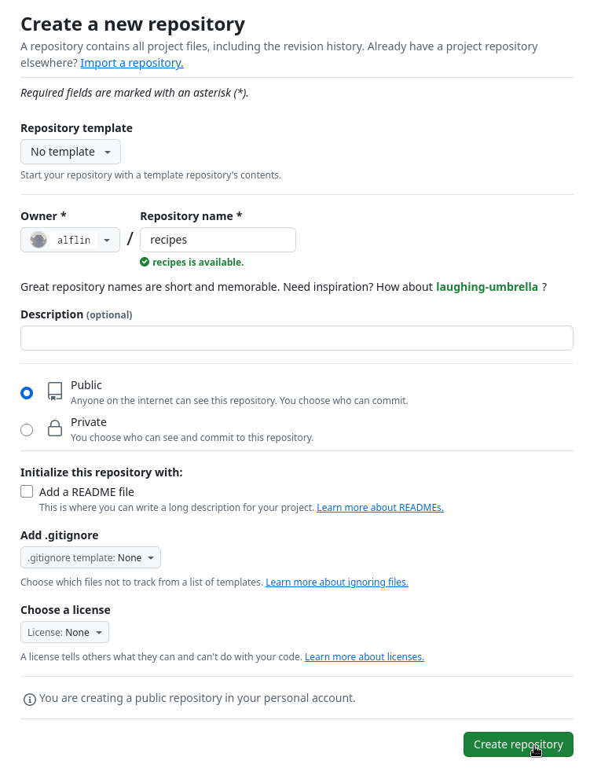
Repository Created
As soon as the repository is created, GitHub displays a page with a URL and some information on how to configure your local repository:

This effectively does the following on GitHub’s servers:
Now that we have two repositories, we need a diagram like this:

Note that our local repository still contains our earlier work, but the remote repository on GitHub appears empty as it doesn’t contain any files yet.
2. Connect Local to Remote Repository
Now we connect the two repositories. We do this by making the GitHub repository a remote for the local repository. The home page of the repository on GitHub includes the URL string we need to identify it:

Click on the ‘SSH’ link to change the protocol from HTTPS to SSH.
HTTPS vs. SSH
We use SSH here because, while it requires some additional configuration, it is a security protocol widely used by many applications.

Adding the Remote
Copy that URL from the browser, go into the local Malaria repository, and run this command:
Make sure to use the URL for your repository rather than Anwar’s: the only difference should be your username.
origin is a local name used to refer to the remote repository. It could be called anything, but origin is a convention that is often used by default in git and GitHub.
We can check that the command has worked by running git remote -v:
3. SSH Background and Setup
Before Anwar can connect to a remote repository, he needs to set up a way for his computer to authenticate with GitHub so it knows it’s him trying to connect.
We are going to set up the method that is commonly used by many different services to authenticate access on the command line. This method is called Secure Shell Protocol (SSH). SSH uses what is called a key pair - a public key and a private key.
You can think of the public key as a padlock, and only you have the key (the private key) to open it. You give this padlock to GitHub and say “lock the communications to my account with this so that only computers that have my private key can unlock communications.”
Keeping your keys secure
You shouldn’t really forget about your SSH keys, since they keep your account secure. It’s good practice to check your SSH keys every so often to ensure they are still secure, up to date, and that there are no unauthorized keys.
Checking for Existing SSH Keys
We will run the list command to check what key pairs already exist on your computer:
If SSH has been set up, the public and private key pairs will be listed. The file names are either id_ed25519/id_ed25519.pub or id_rsa/id_rsa.pub depending on how the key pairs were set up.
If they don’t exist, we need to create them.
3.1 Create an SSH Key Pair
To create an SSH key pair, use this command:
If you are using a legacy system that doesn’t support the Ed25519 algorithm, use: $ ssh-keygen -t rsa -b 4096 -C "your_email@example.com"
Press Enter to use the default file.
Now, it is prompting for a passphrase. Be sure to use something memorable or save your passphrase somewhere. Note that, when typing a passphrase on a terminal, there won’t be any visual feedback.
SSH Key Created
After entering the same passphrase a second time, we receive the confirmation:
Now that we have generated the SSH keys, we will find the SSH files when we check:
3.2 Copy the Public Key to GitHub
First, we need to copy the public key. Be sure to include the .pub at the end:
Now, going to GitHub.com, click on your profile icon in the top right corner to get the drop-down menu. Click “Settings”, then on the settings page, click “SSH and GPG keys” on the left side. Click the “New SSH key” button. Add a title (e.g., “EPHI Workstation”), paste your SSH key into the field, and click “Add SSH key”.
Testing SSH Authentication
Now that we’ve set that up, let’s check our authentication:
Good! This output confirms that the SSH key works as intended. We are now ready to push our work to the remote repository.
4. Push Local Changes to a Remote
Now that authentication is setup, we can return to the remote. This command will push the changes from our local repository to the repository on GitHub:
Enumerating objects: 16, done.
Counting objects: 100% (16/16), done.
Delta compression using up to 8 threads.
Compressing objects: 100% (11/11), done.
Writing objects: 100% (16/16), 1.45 KiB | 372.00 KiB/s, done.
Total 16 (delta 2), reused 0 (delta 0)
remote: Resolving deltas: 100% (2/2), done.
To https://github.com/anwartaju/Malaria.git
* [new branch] main -> mainProxy Settings
Proxy Configuration
If the network you are connected to uses a proxy, your command may fail with “Could not resolve hostname”. To solve this issue, you need to tell Git about the proxy:
When you connect to another network that doesn’t use a proxy, you will need to disable the proxy:
Repository State After Push
Our local and remote repositories are now in this state:

After first push
We can pull changes from the remote repository to the local one as well:
Pulling has no effect in this case because the two repositories are already synchronized.
Challenge: GitHub GUI
Browse to your Malaria repository on GitHub. Under the Code tab, find and click on the text that says “XX commits”. Hover over, and click on, the three buttons to the right of each commit. What information can you gather from these buttons? How would you get that same information in the shell?
View Solution
When you click on the left-most button, you’ll see all of the changes that were made in that particular commit. Green shaded lines indicate additions and red ones removals. In the shell we can do the same thing with git diff. In particular, git diff ID1..ID2 where ID1 and ID2 are commit identifiers will show the differences between those two commits.
The middle button copies the full identifier of the commit to the clipboard. In the shell, git log will show you the full commit identifier for each commit.
The right-most button lets you view all of the files in the repository at the time of that commit. To do this in the shell, we’d need to checkout the repository at that particular time with git checkout ID.
Challenge: Push vs. Commit
How is “git push” different from “git commit”?
View Solution
When we push changes, we’re interacting with a remote repository to update it with the changes we’ve made locally (often this corresponds to sharing the changes we’ve made with others). Commit only updates your local repository.
Challenge: GitHub License and README Files
In this episode we learned about creating a remote repository on GitHub, but when you initialized your GitHub repo, you didn’t add a README.md or a license file. If you had, what do you think would have happened when you tried to link your local and remote repositories?
View Solution
In this case, we’d see a merge conflict due to unrelated histories. When GitHub creates a README.md file, it performs a commit in the remote repository. When you try to pull the remote repository to your local repository, Git detects that they have histories that do not share a common origin and refuses to merge.
You can force git to merge the two repositories with the option --allow-unrelated-histories. Be careful when you use this option and carefully examine the contents before merging.
Here is the lesson converted to Quarto format with Ethiopian public health context:
Collaborating
Questions
- How can I use version control to collaborate with other people?
Setting Up Collaboration
For the next step, get into pairs. One person will be the “Owner” and the other will be the “Collaborator”. The goal is that the Collaborator add changes into the Owner’s repository. We will switch roles at the end, so both persons will play Owner and Collaborator.
Practicing By Yourself
If you’re working through this lesson on your own, you can carry on by opening a second terminal window. This window will represent your partner, working on another computer. You won’t need to give anyone access on GitHub, because both ‘partners’ are you.
Adding a Collaborator
The Owner needs to give the Collaborator access. In your repository page on GitHub, click the “Settings” button on the right, select “Collaborators”, click “Add people”, and then enter your partner’s username.

GitHub Collaborators settings
To accept access to the Owner’s repo, the Collaborator needs to go to https://github.com/notifications or check for email notification. Once there she can accept access to the Owner’s repo.
Cloning a Repository
Next, the Collaborator needs to download a copy of the Owner’s repository to her machine. This is called “cloning a repo”.
The Collaborator doesn’t want to overwrite her own version of Malaria, so needs to clone the Owner’s repository to a different location.
To clone the Owner’s repo into her Desktop folder, the Collaborator enters:
Replace ‘anwartaju’ with the Owner’s username.
If you choose to clone without the clone path specified at the end, you will clone inside your own folder! Make sure to navigate to the Desktop folder first.
Cloning Visualization

Git Clone
The Collaborator can now make a change in her clone of the Owner’s repository, exactly the same way as we’ve been doing before:
Pushing Changes
Then push the change to the Owner’s repository on GitHub:
Note that we didn’t have to create a remote called origin: Git uses this name by default when we clone a repository.
Viewing Changes
Take a look at the Owner’s repository on GitHub again, and you should be able to see the new commit made by the Collaborator. You may need to refresh your browser to see the new commit.
Some more about remotes
In this episode and the previous one, our local repository has had a single “remote”, called origin. A remote is a copy of the repository that is hosted somewhere else, that we can push to and pull from, and there’s no reason that you have to work with only one.
git remote -vlists all the remotes that are configuredgit remote add [name] [url]is used to add a new remotegit remote remove [name]removes a remotegit remote set-url [name] [newurl]changes the URL associated with the remotegit remote rename [oldname] [newname]changes the local alias
Pulling Changes
To download the Collaborator’s changes from GitHub, the Owner now enters:
remote: Enumerating objects: 4, done.
remote: Counting objects: 100% (4/4), done.
remote: Compressing objects: 100% (2/2), done.
remote: Total 3 (delta 0), reused 3 (delta 0), pack-reused 0
Unpacking objects: 100% (3/3), done.
From https://github.com/anwartaju/Malaria
* branch main -> FETCH_HEAD
9272da5..29aba7c main -> origin/main
Updating 9272da5..29aba7c
Fast-forward
malaria_analysis.py | 5 +
1 file changed, 5 insertion(+)
create mode 100644 malaria_analysis.pyNow the three repositories (Owner’s local, Collaborator’s local, and Owner’s on GitHub) are back in sync.
Basic Collaborative Workflow
A Basic Collaborative Workflow
In practice, it is good to be sure that you have an updated version of the repository you are collaborating on, so you should git pull before making our changes. The basic collaborative workflow would be:
- Update your local repo with
git pull origin main - Make your changes and stage them with
git add - Commit your changes with
git commit -m - Upload the changes to GitHub with
git push origin main
It is better to make many commits with smaller changes rather than one commit with massive changes: small commits are easier to read and review.
Challenge: Switch Roles and Repeat
Switch roles and repeat the whole process. The new Owner should give access to the new Collaborator, who will clone the repository, make a change, push it, and the Owner will pull it.
Challenge: Review Changes
The Owner pushed commits to the repository without giving any information to the Collaborator. How can the Collaborator find out what has changed with command line? And on GitHub?
View Solution
On the command line, the Collaborator can use git fetch origin main to get the remote changes into the local repository, but without merging them. Then by running git diff main origin/main the Collaborator will see the changes output in the terminal.
On GitHub, the Collaborator can go to the repository and click on “commits” to view the most recent commits pushed to the repository.
Challenge: Comment Changes in GitHub
The Collaborator has some questions about one line change made by the Owner and has some suggestions to propose. For example, the Owner might have added a function to calculate Malaria incidence but the Collaborator notices a potential error in the formula.
With GitHub, it is possible to comment on the diff of a commit. Over the line of code to comment, a blue comment icon appears to open a comment window.
The Collaborator posts her comments and suggestions using the GitHub interface.
View Solution
- Navigate to the repository on GitHub
- Click on “Commits” to see the list of commits
- Click on the specific commit you want to comment on
- Hover over the line of code you want to comment on
- Click the blue comment icon that appears
- Type your comment or suggestion
- Click “Start a review” or “Add single comment”
This is a powerful feature for code review and collaborative improvement of analysis scripts.
Challenge: Version History, Backup, and Version Control
Some backup software can keep a history of the versions of your files. They also allow you to recover specific versions. How is this functionality different from version control? What are some of the benefits of using version control, Git and GitHub?
View Solution
Differences from backup software:
- Version control tracks changes with metadata (who, when, why)
- Version control supports branching for parallel development
- Version control enables merging of changes from multiple contributors
- Version control provides a complete history of the project
Benefits of Git and GitHub:
- Collaboration: Multiple researchers can work simultaneously
- Accountability: Every change is attributed to a specific person
- Reproducibility: Exact versions of code and analysis can be referenced
- Code review: Collaborators can comment on and suggest changes
- Backup: GitHub provides off-site backup of your code
- Documentation: Commit messages serve as documentation of changes
For public health research, these features ensure that analyses are transparent, reproducible, and can be reviewed by other researchers at EPHI or partner organizations.
Conflicts
Questions
- What do I do when my changes conflict with someone else’s?
Understanding Conflicts
As soon as people can work in parallel, they’ll likely step on each other’s toes. This will even happen with a single person: if we are working on analysis code on both our laptop and a server, we could make different changes to each copy. Version control helps us manage these conflicts by giving us tools to resolve overlapping changes.
To see how we can resolve conflicts, we must first create one. The file Malaria_incidence_analysis.py currently looks like this in both partners’ copies of our Malaria repository:
Creating a Conflict - Collaborator’s Change
Let’s add a line to the collaborator’s copy only:
# Tuberculosis Incidence Analysis - Ethiopia
def load_Malaria_data(filepath):
data = pd.read_csv(filepath)
return data
def calculate_incidence(cases, population):
incidence = (cases / population) * 100000
return incidence
# Add function to visualize Malaria trends
def plot_Malaria_trends(data):
import matplotlib.pyplot as plt
plt.plot(data['year'], data['incidence'])
plt.title('Malaria Incidence Trends in Ethiopia')
plt.show()and then push the change to GitHub:
Creating a Conflict - Owner’s Change
Now let’s have the owner make a different change to their copy without updating from GitHub:
# Tuberculosis Incidence Analysis - Ethiopia
def load_Malaria_data(filepath):
data = pd.read_csv(filepath)
return data
def calculate_incidence(cases, population):
incidence = (cases / population) * 100000
return incidence
# Add function to calculate age-standardized rates
def age_standardize_incidence(data, standard_population):
age_adj_incidence = data['incidence'] * standard_population
return age_adj_incidenceWe can commit the change locally:
Push Rejected
But Git won’t let us push it to GitHub:
To https://github.com/anwartaju/Malaria.git
! [rejected] main -> main (fetch first)
error: failed to push some refs to 'https://github.com/anwartaju/Malaria.git'
hint: Updates were rejected because the remote contains work that you do
hint: not have locally. This is usually caused by another repository pushing
hint: to the same ref. You may want to first integrate the remote changes
hint: (e.g., 'git pull ...') before pushing again.
Conflict Diagram
Git rejects the push because it detects that the remote repository has new updates that have not been incorporated into the local branch.
Pulling Changes
What we have to do is pull the changes from GitHub, merge them into the copy we’re currently working in, and then push that. Let’s start by pulling:
remote: Enumerating objects: 5, done.
remote: Counting objects: 100% (5/5), done.
remote: Compressing objects: 100% (1/1), done.
remote: Total 3 (delta 2), reused 3 (delta 2), pack-reused 0
Unpacking objects: 100% (3/3), done.
From https://github.com/anwartaju/Malaria
* branch main -> FETCH_HEAD
29aba7c..dabb4c8 main -> origin/main
Auto-merging Malaria_incidence_analysis.py
CONFLICT (content): Merge conflict in Malaria_incidence_analysis.py
Automatic merge failed; fix conflicts and then commit the result.Configuring Pull Behavior
You may need to tell Git what to do
If you see output about divergent branches, Git is asking what it should do. In newer versions of Git it gives you the option of specifying different behaviours when a pull would merge divergent branches. In our case we want ‘the default strategy’. To use this strategy run:
Then attempt the pull again:
Viewing the Conflict
The git pull command updates the local repository to include those changes already included in the remote repository. After the changes from remote branch have been fetched, Git detects that changes made to the local copy overlap with those made to the remote repository, and therefore refuses to merge the two versions. The conflict is marked in the affected file:
# Tuberculosis Incidence Analysis - Ethiopia
def load_Malaria_data(filepath):
data = pd.read_csv(filepath)
return data
def calculate_incidence(cases, population):
incidence = (cases / population) * 100000
return incidence
<<<<<<< HEAD
# Add function to calculate age-standardized rates
def age_standardize_incidence(data, standard_population):
age_adj_incidence = data['incidence'] * standard_population
return age_adj_incidence
=======
# Add function to visualize Malaria trends
def plot_Malaria_trends(data):
import matplotlib.pyplot as plt
plt.plot(data['year'], data['incidence'])
plt.title('Malaria Incidence Trends in Ethiopia')
plt.show()
>>>>>>> dabb4c8c450e8475aee9b14b4383acc99f42af1dUnderstanding Conflict Markers
Our change is preceded by <<<<<<< HEAD. Git has then inserted ======= as a separator between the conflicting changes and marked the end of the content downloaded from GitHub with >>>>>>>. (The string of letters and digits after that marker identifies the commit we’ve just downloaded.)
It is now up to us to edit this file to remove these markers and reconcile the changes. We can do anything we want: keep the change made in the local repository, keep the change made in the remote repository, write something new to replace both, or get rid of the change entirely.
Let’s replace both so that the file looks like this:
# Tuberculosis Incidence Analysis - Ethiopia
def load_Malaria_data(filepath):
data = pd.read_csv(filepath)
return data
def calculate_incidence(cases, population):
incidence = (cases / population) * 100000
return incidence
# Add function to calculate age-standardized rates
def age_standardize_incidence(data, standard_population):
age_adj_incidence = data['incidence'] * standard_population
return age_adj_incidence
# Add function to visualize Malaria trends
def plot_Malaria_trends(data):
import matplotlib.pyplot as plt
plt.plot(data['year'], data['incidence'])
plt.title('Malaria Incidence Trends in Ethiopia')
plt.show()Completing the Merge
To finish merging, we add Malaria_incidence_analysis.py to the changes being made by the merge and then commit:
Now we can push our changes to GitHub:
After the Merge
Git keeps track of what we’ve merged with what, so we don’t have to fix things by hand again when the collaborator who made the first change pulls again:
remote: Enumerating objects: 10, done.
remote: Counting objects: 100% (10/10), done.
remote: Compressing objects: 100% (2/2), done.
remote: Total 6 (delta 4), reused 6 (delta 4), pack-reused 0
Unpacking objects: 100% (6/6), done.
From https://github.com/anwartaju/Malaria
* branch main -> FETCH_HEAD
dabb4c8..2abf2b1 main -> origin/main
Updating dabb4c8..2abf2b1
Fast-forward
Malaria_incidence_analysis.py | 2 +-
1 file changed, 1 insertion(+), 1 deletion(-)We get the merged file:
Both functions are now present in the file.
Strategies to Minimize Conflicts
Git’s ability to resolve conflicts is very useful, but conflict resolution costs time and effort, and can introduce errors if conflicts are not resolved correctly. If you find yourself resolving a lot of conflicts in a project, consider these approaches:
Technical approaches: - Pull from upstream more frequently, especially before starting new work - Use topic branches to segregate work, merging to main when complete - Make smaller, more atomic commits - Push your work when it is done - Break large files into smaller ones
Project management strategies: - Clarify who is responsible for what areas - Discuss task order with collaborators - Establish project conventions for code style
Challenge: Solving Conflicts
Clone the repository created by your instructor. Add a new file to it, and modify an existing file (your instructor will tell you which one). When asked by your instructor, pull changes from the repository to create a conflict, then resolve it.
Challenge: Conflicts on Non-textual Files
What does Git do when there is a conflict in an image (like a map of Malaria incidence in Ethiopia) or some other non-textual file that is stored in version control?
View Solution
When there is a conflict on an image or other binary file, Git prints a message like:
Git cannot automatically insert conflict markers into an image as it does for text files. So, instead of editing the image file, we must check out the version we want to keep:
# To keep our version
git checkout HEAD ethiopia_Malaria_map.png
git add ethiopia_Malaria_map.png
git commit -m "Use our Malaria map version"
# To keep collaborator's version
git checkout 439dc8c0 ethiopia_Malaria_map.png
git add ethiopia_Malaria_map.png
git commit -m "Use collaborator's Malaria map version"
# To keep both versions
git checkout HEAD ethiopia_Malaria_map.png
git mv ethiopia_Malaria_map.png ethiopia_Malaria_map_v1.png
git checkout 439dc8c0 ethiopia_Malaria_map.png
git mv ethiopia_Malaria_map.png ethiopia_Malaria_map_v2.png
git add ethiopia_Malaria_map_v1.png ethiopia_Malaria_map_v2.png
git commit -m "Keep both Malaria map versions"Challenge: A Typical Work Session
You sit down at your computer to work on a shared project that is tracked in a remote Git repository. During your work session, you take the following actions, but not in this order:
- Make changes by appending the number
100to a text filecases.csv - Update remote repository to match the local repository
- Celebrate your success with some Ethiopian coffee
- Update local repository to match the remote repository
- Stage changes to be committed
- Commit changes to the local repository
In what order should you perform these actions to minimize the chances of conflicts?
View Solution
| order | action | command |
|---|---|---|
| 1 | Update local | git pull origin main |
| 2 | Make changes | echo 100 >> cases.csv |
| 3 | Stage changes | git add cases.csv |
| 4 | Commit changes | git commit -m "Add 100 to cases.csv" |
| 5 | Update remote | git push origin main |
| 6 | Celebrate! | Enjoy your coffee! |
Advanced Branching for DS Experiments
Advanced Branching for DS Experiments
In Data Science, branching isn’t just for features—it’s for tracking experiments. Git Flow for ML enables baseline tracking, hyperparameter tuning, and ensemble development.
# Setup a mock repo structure for a climate impact study
mkdir -p ds_project/{data,notebooks,models}
cd ds_project
git init
# 1. Main baseline (simple linear regression on climate data)
git checkout -b main
echo "# Baseline: Temp vs Yield (Linear)" > notebooks/baseline.py
git add . && git commit -m "feat: baseline linear model"
# 2. Hyperparam branch (RandomForest on Ethiopian zones)
git checkout -b experiment/rf-hyperopt main
echo "# Hyperparam: RandomForest with GridSearch" > notebooks/rf_search.py
git add . && git commit -m "exp: RF hyperparameter tuning"
# 3. Ensemble branch (branching off hyperparam)
git checkout -b experiment/ensemble-stacking experiment/rf-hyperopt
echo "# Ensemble: Stacking RF + XGBoost" > notebooks/ensemble.py
git add . && git commit -m "exp: stacking ensemble"
git log --oneline --graph --allAdvanced Branching for DS Experiments ( conti..)
Tip
Git Flow for DS: Keep main as production/stable metrics. Use experiment/ prefixes for hyperparameter runs and feat/ for new data sources. This allows discarding failed experiments without polluting history.
Challenge 1: Branching Strategy
Create a branch calledexperiment/feature-engineering from main. Add a Python script that extracts slope from DEM data for Ethiopian flood risk prediction.
Collaborative Notebooks & Repro Workflows
Jupyter/Quarto notebooks are challenging for Git diffs. Use nbdev-style principles and Quarto to enforce reproducibility.
# Check for nbdime for cleaner notebook diffs
import subprocess
try:
result = subprocess.run(["nbdime", "--version"], capture_output=True, text=True)
print(f"nbdime version: {result.stdout.strip()} (Good for diffing notebooks)")
except FileNotFoundError:
print("nbdime not installed. Run: pip install nbdime")
print("This allows diffing notebook JSON vs code cells in Git.")Warning
Never commit executed notebook outputs. Use git clean -f -X or pre-commit hooks to strip outputs before committing. For Quarto, use freeze: true in the YAML to cache expensive computations.
Challenge 2: Notebook Cleanup
Add a.gitignore rule to ignore .ipynb_checkpoints/ and *.html outputs. Stage a notebook file while stripping outputs using jupyter nbconvert --ClearOutputPreprocessor.enabled=True --inplace.
Large Data & LFS Mastery
Geospatial data (NetCDF, shapefiles) is too large for standard Git. Use Git LFS and DVC (Data Version Control).
# Geopandas workflow for Ethiopian administrative boundaries
import geopandas as gpd
from shapely.geometry import Point
# Create mock Ethiopian zones
zones = ['Tigray', 'Afar', 'Amhara', 'Oromia', 'Somali',
'Benishangul-Gumuz', 'SNNPR']
geometries = [Point(i, 10) for i in range(len(zones))]
gdf = gpd.GeoDataFrame({'zone': zones, 'geometry': geometries},
crs='EPSG:4326')
print(gdf.head())
print(f"Working with {len(gdf)} zones. Using Git LFS to store shapefiles.")Tip
Git LFS vs DVC: Use LFS for binary files you diff rarely (images, small models). Use DVC for datasets >1GB—it stores data in cloud/S3 with only pointers in Git.
Challenge 3: Data Versioning
Using DVC, add adata/raw/ directory with a mock NetCDF file. Track it with DVC, push to a remote, and commit the .dvc file to Git.
GitHub Actions for DS CI/CD
Automate environment testing, linting, and deployment to HuggingFace Spaces.
# GitHub Actions workflow for DS
mkdir -p .github/workflows
cat << EOF > .github/workflows/ds-ci.yml
name: DS CI/CD
on: [push]
jobs:
test:
runs-on: ubuntu-latest
steps:
- uses: actions/checkout@v4
- uses: actions/setup-python@v5
with:
python-version: '3.10'
- name: Install conda env
run: |
pip install mamba
mamba env create -f environment.yml
- name: Lint with black and ruff
run: |
pip install black ruff
black --check notebooks/
ruff check notebooks/
- name: Deploy to HuggingFace (on main)
if: github.ref == 'refs/heads/main'
run: |
git clone https://huggingface.co/spaces/username/demo-space
cp app.py demo-space/
cd demo-space && git push
EOF
cat .github/workflows/ds-ci.ymlImportant
For HuggingFace Spaces, use the huggingface_hub Python library or git push with a token stored in GitHub Secrets (HF_TOKEN). This enables automatic updates of your Gradio/Streamlit app.
Challenge 4: CI/CD Workflow
Add a step to the workflow that runspytest tests/ if a tests/ directory exists. Ensure the workflow fails if tests fail.
Power User Commands
Interactive rebase and stash are lifesavers for messy analysis and context switching.
# View recent commits
git log --oneline -3
# Interactive rebase to clean history
echo "To squash 3 commits into one:"
echo "git rebase -i HEAD~3"
echo "> (In editor: change 'pick' to 'squash' for last two commits)"
# Stash for interrupted analysis
echo "Saving current work-in-progress:"
echo "git stash push -m 'WIP: Climate data normalization'"
git stash list
echo "Restoring later: git stash pop"Tip
Interactive Rebase: Use before pushing to main. Transform "fix typo", "add data", "final fix" into a single "feat: add Ethiopian crop model" for cleaner history.
Challenge 5: Clean History
Create 3 dummy commits. Usegit rebase -i HEAD~3 to squash them into one commit. Then create a new file, stash it, and verify the working directory is clean.
DS-Ready Repo Patterns
When working on High-Performance Computing clusters, use shallow clones and pre-commit hooks.
# Shallow clone (latest commit only, minimal bandwidth)
# git clone --depth 1 https://github.com/user/repo.git
# Pre-commit hooks configuration
cat << EOF > .pre-commit-config.yaml
repos:
- repo: https://github.com/psf/black
rev: 24.0.0
hooks:
- id: black
- repo: https://github.com/astral-sh/ruff-pre-commit
rev: v0.3.0
hooks:
- id: ruff
- repo: local
hooks:
- id: data-validator
name: Validate NetCDF headers
entry: python scripts/validate_netcdf.py
language: system
files: \.nc$
EOF
pre-commit install# Mock data validator for NetCDF files
def validate_netcdf_mock(filepath):
"""Check for required climate variables."""
print(f"Validating {filepath}")
required_vars = ['lat', 'lon', 'time', 'precip']
print(f"Mock validation passed: {required_vars} found")
return True
validate_netcdf_mock("data/ethiopia_era5.nc")Note
Pre-commit hooks on HPC: Run pre-commit install --install-hooks after cloning on a cluster. This ensures code linting and prevents accidental commits of large binaries without LFS.
Challenge 6: Custom Validator
Write a script that checks if a CSV has more than 100 rows. Add it as apre-commit hook to block commits if the CSV is empty.
7. GitHub Features for Research
Use Issue Templates for experiment tracking and Projects for managing paper submission timelines.
# Create Issue Template for Experiments
mkdir -p .github/ISSUE_TEMPLATE
cat << EOF > .github/ISSUE_TEMPLATE/experiment.md
---
name: ML Experiment
about: Track a specific model or data experiment
title: '[EXP] '
labels: experiment
assignees: ''
---
## Hypothesis
*What are we testing?*
## Metrics
- [ ] Baseline RMSE:
- [ ] New RMSE:
## Git Branch
\`experiment/\`
## Data Version
\`dvc.lock\` commit hash:
## Results
*Link to notebook or screenshot*
EOF
# GitHub Projects structure
echo "Project Board Setup:"
echo " - Column 1: Literature Review"
echo " - Column 2: Data Acquisition (Ethiopia Boundaries)"
echo " - Column 3: Model Training (exp/xgboost)"
echo " - Column 4: Paper Drafting (Quarto)"Tip
Projects: Link pull requests directly to project items. For a paper timeline, use a “Milestone” for the submission date to visualize experiments blocking publication.
Challenge 7: Project Management
Create a GitHub Project for your repo. Add two issues: “Data Cleaning for Ethiopian Zones” and “Hyperparameter Tuning”. Move them to “In Progress” using the GitHub CLI (gh project item-add).
Cheat Sheet
Top 10 Git aliases for Data Scientists
| Alias | Command | DS Use Case |
|---|---|---|
git graph |
log --graph --oneline --all |
Visualize experiment branches |
git unstage |
reset HEAD -- |
Undo git add on a huge CSV |
git last |
log -1 HEAD |
Check last model commit |
git wip |
commit -am "WIP" |
Quick save before meeting |
git undo |
reset --soft HEAD^ |
Undo last commit, keep changes |
git lfs-ls |
lfs ls-files |
List large files tracked |
git nb-clean |
!jupyter nbconvert --ClearOutputPreprocessor.enabled=True %1 |
Clean notebook before commit |
git sync |
!git pull --rebase && git push |
Keep linear history |
git blame-ds |
blame -L 10,20 notebook.ipynb |
Find who broke analysis |
git dvc-push |
!dvc push && git push |
Sync data and code |
Resources
Essential Tools for Data Science Git Workflows
DVC - Version control for machine learning datasets and pipelines. Integrates with cloud storage (S3, GCS, Azure).
pre-commit - Framework for managing multi-language pre-commit hooks. Essential for code quality and preventing data leaks.
nbdev - Develop libraries in Jupyter Notebooks with automatic export, documentation, and testing.
Quarto - Scientific and technical publishing system supporting Python, R, Julia, and Observable.
Git LFS - Manage large files in Git repositories with pointer files and remote storage.
nbdime - Smart diffing and merging for Jupyter notebooks.
Further Reading
Summary
- Branch strategically:
mainfor production,experiment/for ML iterations - Use Quarto and nbdev for reproducible notebook workflows
- Manage large data with Git LFS (binaries) and DVC (datasets >1GB)
- Automate CI/CD with GitHub Actions (testing, linting, deployment)
- Master power commands: rebase for clean history, stash for context switching
- Configure pre-commit hooks for HPC cluster compatibility
- Leverage GitHub Issues and Projects for research management
Supplemental: Using Git from RStudio
Questions
- How can I use Git with RStudio?
Why Use RStudio for Version Control?
Version control can be very useful when developing data analysis scripts. For that reason, the popular development environment RStudio for the R programming language has built-in integration with Git. While some advanced Git features still require the command-line, RStudio has a nice interface for many common Git operations.
RStudio allows us to create a project associated with a given directory to keep track of various related files. To be able to track the development of the project over time, to be able to revert to previous versions, and to collaborate with others, we version control the RStudio project with Git.
Creating a New Project
To get started using Git in RStudio, we create a new project:
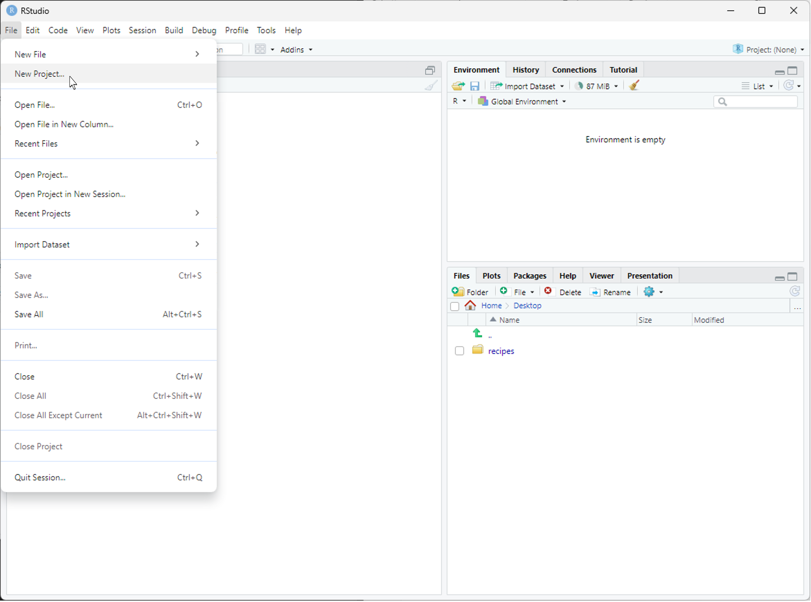
This opens a dialog asking us how we want to create the project. We have some options here. Let’s say that we want to use RStudio with the Malaria repository that we already made. Since that repository lives in a directory on our computer, we choose the option “Existing Directory”:
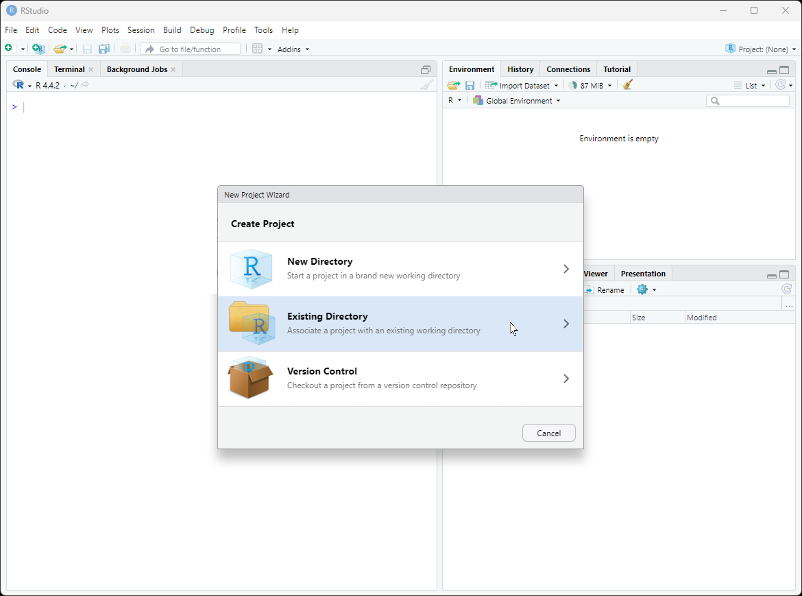
Setting Up Git in RStudio
Do You See a “Version Control” Option?
Although we’re not going to use it here, there should be a “version control” option on this menu. That is what you would click on if you wanted to create a project on your computer by cloning a repository from GitHub. If that option is not present, it probably means that RStudio doesn’t know where your Git executable is.
Find your Git Executable
First let’s make sure that Git is installed on your computer. Open your shell or command prompt and then type:
which git(macOS, Linux)where git(Windows)
If there is no version of Git on your computer, please follow the Git installation instructions to install Git now.
Tell RStudio where to find Git
In RStudio, go to the Tools menu > Global Options > Git/SVN and then browse to the Git executable you found. Now restart RStudio.
Opening Existing Repository
Next, RStudio will ask which existing directory we want to use. Click “Browse…” and navigate to the correct directory, then click “Create Project”:
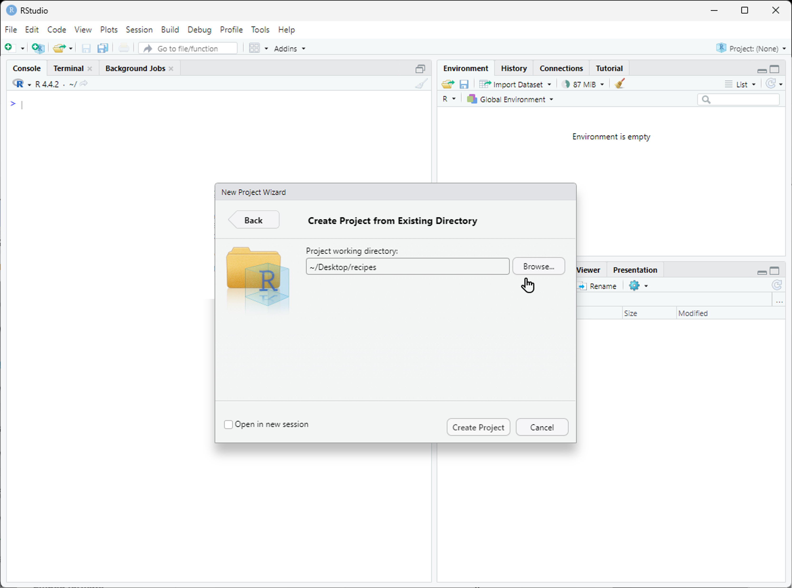
Ta-da! We have created a new project in RStudio within the existing Malaria repository. Notice the vertical “Git” menu in the menu bar. RStudio has recognized that the current directory is a Git repository, and gives us a number of tools to use Git:
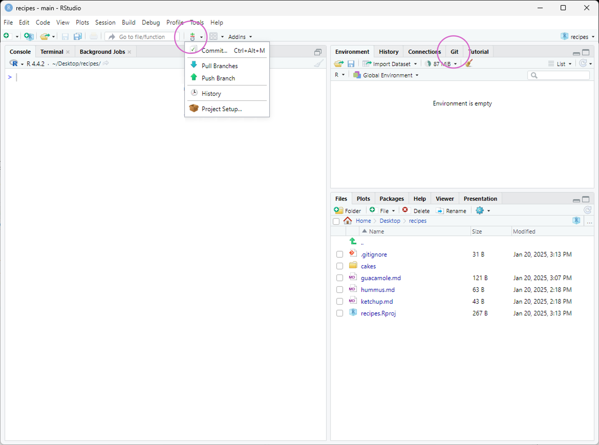
Editing Files
To edit the existing files in the repository, we can click on them in the “Files” panel on the lower right. Now let’s add some additional information about Malaria data analysis:
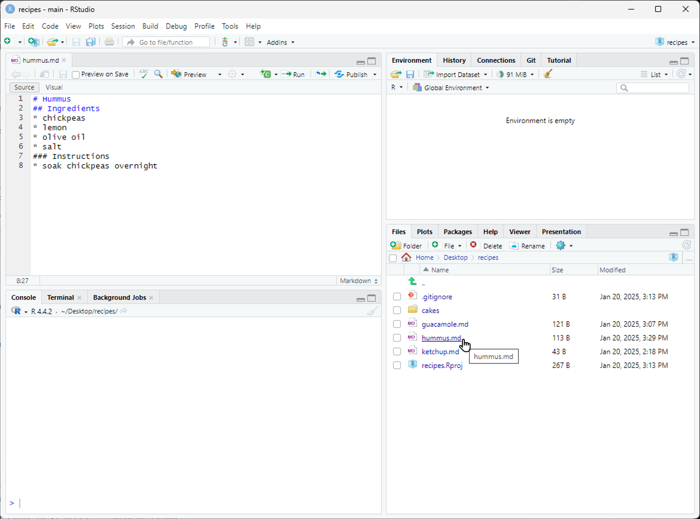
Once we have saved our edited files, we can use RStudio to commit the changes by clicking on “Commit…” in the Git menu:
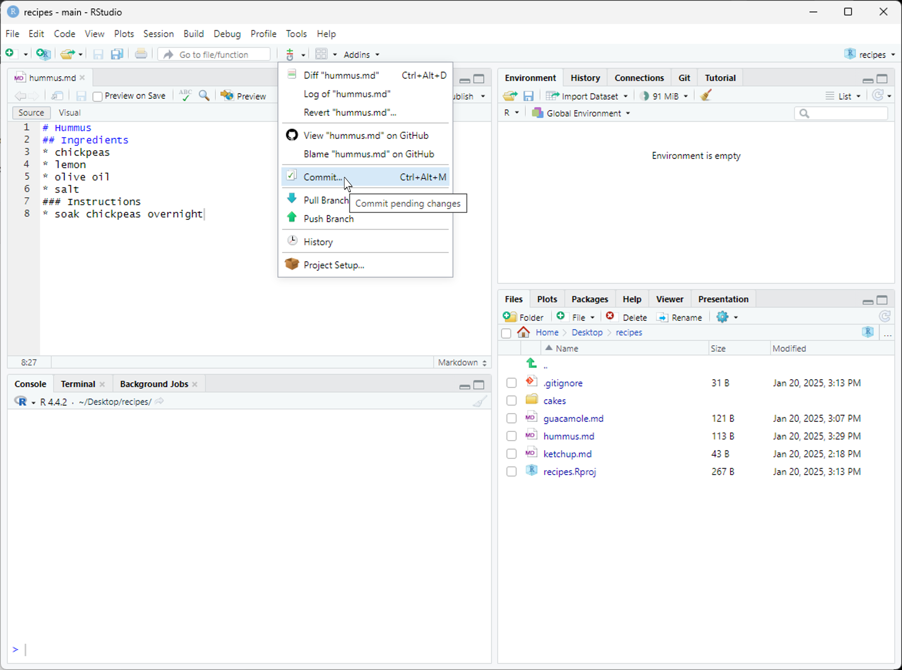
Reviewing Changes
This will open a dialogue where we can select which files to commit (by checking the appropriate boxes in the “Staged” column), and enter a commit message (in the upper right panel). The icons in the “Status” column indicate the current status of each file. Clicking on a file shows information about changes in the lower panel (using output of git diff). Once everything is the way we want it, we click “Commit”:
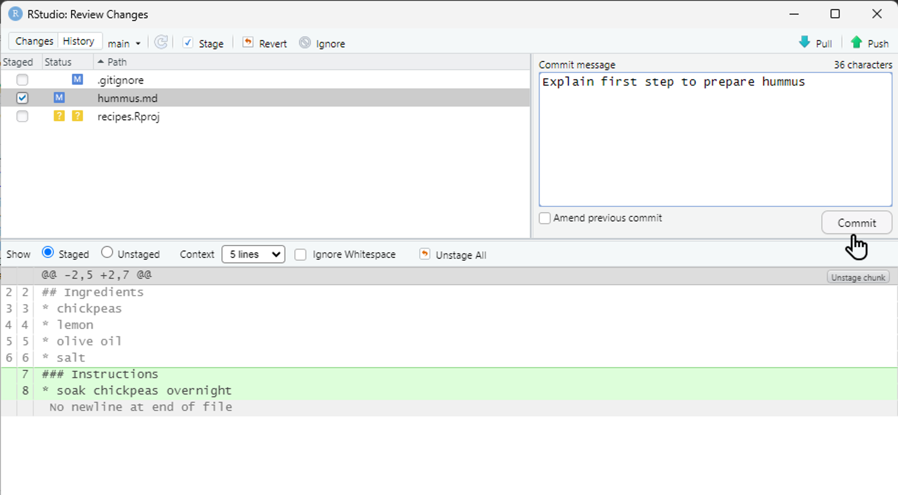
Review Changes
Pushing and Pulling
The changes can be pushed by selecting “Push Branch” from the Git menu. There are also options to pull from the remote repository, and to view the commit history:
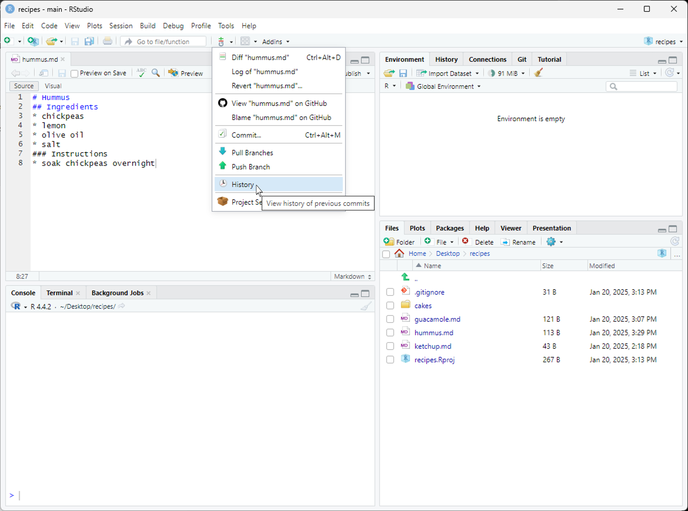
Git Menu Options
Are the Push/Pull Commands Grayed Out?
Grayed out Push/Pull commands generally mean that RStudio doesn’t know the location of your remote repository (e.g., on GitHub). To fix this, open a terminal to the repository and enter the command: git push -u origin main. Then restart RStudio.
Viewing History
If we click on “History”, we can see a graphical version of what git log would tell us:
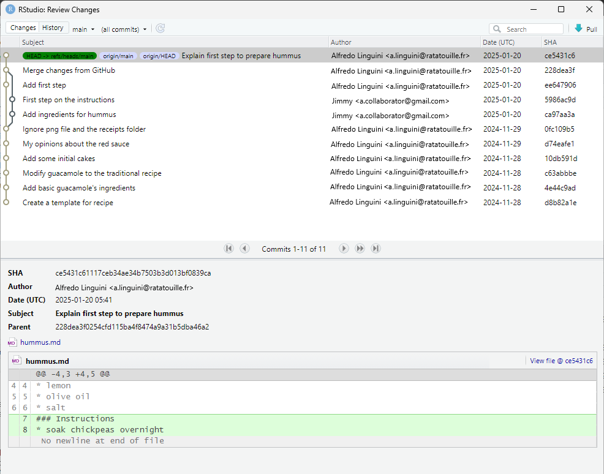
View History
Now that you’ve confirmed your commit history locally using the Git pane in RStudio, you can head over to GitHub to see the same history reflected in your repository online.
GitHub Commit History
To view it, go to your repository page and click on the “Commits” link near the top:
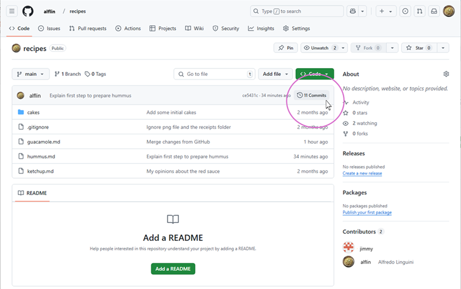
This will open a list of all commits, showing who made each change and when:
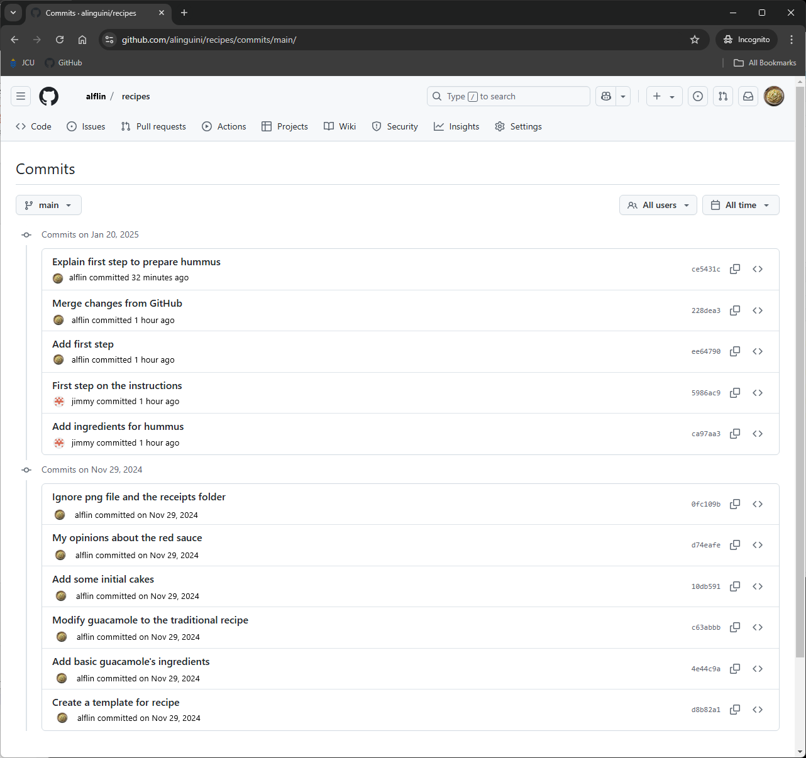
After seeing how your commit history appears on GitHub, you can be confident that your changes have been successfully pushed and recorded.
RStudio and .gitignore
Next, let’s take a look at how RStudio quietly helps manage your repository by automatically updating the .gitignore file.
When you create a New Project in RStudio, it generates an .Rproj file and a hidden folder called .Rproj.user. These are used to store project-specific settings and user preferences.
RStudio recognizes that these files typically shouldn’t be tracked in version control, so it automatically adds .Rproj.user to your existing .gitignore file.
Notice that the .gitignore file was modified and appears as a changed file in the Git tab on the right-hand side panel:
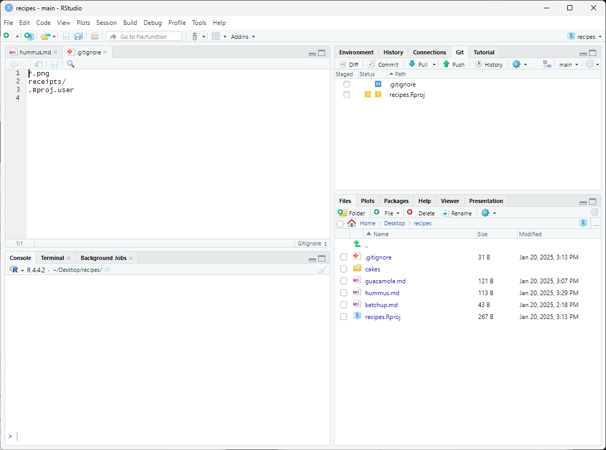
Gitignore Update
Challenge: Push .gitignore Changes
Consider adding other files to be ignored, such as Malaria.Rproj, .Rhistory, and .RData, and complete the process for saving RStudio’s .gitignore file changes to your remote repository.
View Solution
- Edit the
.gitignorefile to add additional patterns:
Stage the changes in RStudio by checking the box next to
.gitignorein the Git tabClick “Commit” and enter a commit message, e.g., “Update .gitignore for RStudio project files”
Click “Push” to send the changes to GitHub
Verify on GitHub that the
.gitignorefile has been updated
RStudio Git Integration Summary
There are many more features in the RStudio Git menu, including:
- Diff viewer - See changes between versions
- Blame - See who last modified each line of code
- Branch management - Create and switch between branches
- Merge tools - Resolve conflicts graphically
These tools make it easier for public health researchers and data scientists to incorporate version control into their daily workflow without needing to memorize complex command-line operations.
Thank you! 🤝
🇪🇹